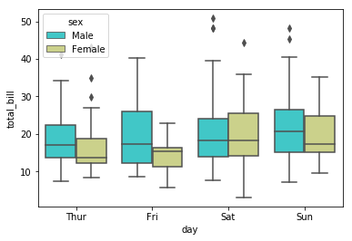
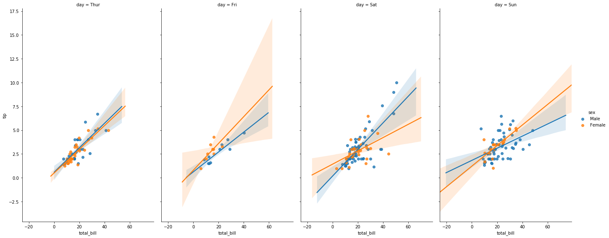
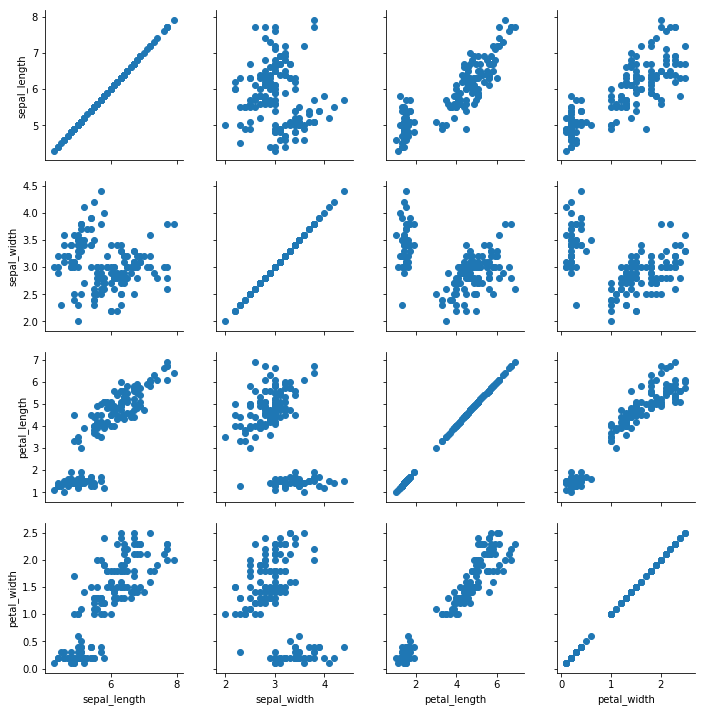

Easter eggs
Aqui estão três easter eggs:
in [1]: import __hello__
out[1]: Hello world!
Este segundo easter egg é o mais interessante. Basicamente vemos nele os "mandamentos" do Python:
in [1]: import this
out[1]:
"""
The Zen of Python, by Tim Peters
Beautiful is better than ugly.
Explicit is better than implicit.
Simple is better than complex.
Complex is better than complicated.
Flat is better than nested.
Sparse is better than dense.
Readability counts.
Special cases aren't special enough to break the rules.
Although practicality beats purity.
Errors should never pass silently.
Unless explicitly silenced.
In the face of ambiguity, refuse the temptation to guess.
There should be one-- and preferably only one --obvious way to do it.
Although that way may not be obvious at first unless you're Dutch.
Now is better than never.
Although never is often better than *right* now.
If the implementation is hard to explain, it's a bad idea.
If the implementation is easy to explain, it may be a good idea.
Namespaces are one honking great idea -- let's do more of those!
"""
Por fim, um terceiro easter egg é o seguinte comando:
import antigravity
Se você executar esse código, você é levado a um quadrinho do site xkcd. O quadrinho fica nesse link.
Comandos básicos
Listas:
In [1]: list1 = [1, 2, 3]
In [2]: list1[2]
Out[2]: 3
In [3]]: list1[2] = 5
In [4]: list1
Out [4]: [1, 2, 5]
Dicionários Aqui, em vez de acessar o valor com um índice, acessamos com valores de chaves (aqueles que estão entre {}):
In [1]: dic = {'var1': 1, 'var2': 2}
In [2]: dic
Out [2]: {'var1': 1, 'var2': 2}
In [3]: dic['var1'] = 3
In [4]: dic['var1']
Out[4]: 3
In [5]: dic2 = {'list': [1,2,3], 'string': 'hello, world', 'number': 1.0}
In [6]: dic2
Out[6]: {'list': [1, 2, 3], 'string': 'hello, world', 'number': 1.0}
In [7]: dic2['string']
Out[7]: 'hello, world'
In [8]: type(dic2['number'])
Out[8]: float
In [9]: dic2['list'][2]
Out[9]: 3
Tuplas
As tuplas são semelhantes às listas, mas após a definição dos valores, não é permitido atribuir novos valores.
In [1]: tup = (1, 2, 3)
In [2]: tup
Out[2]: (1, 2, 3)
In [3]: tup[1]
Out[3]: 2
In [4]: tup[1]=3
Out[4]: a saída será um erro, pois como foi dito, as tuplas não aceitam atribuições (assigments).
Booleanos e operações lógicas
Resumo das operações:
| Operador | Comparação |
|---|---|
| == | igual a |
| != | diferente de |
| < | menor que |
| > | maior que |
| <= | menor ou igual a |
| >= | maior ou igual a |
In [1]: x = 10
In [2]: x >= 10
Out[2]: True
In [3]: x >= 10 and x < 11
Out[3]: True
In [4]: x >= 10 or x > 20
Out[4]: True
In [5]: x < 10 or x > 10
Out[5]: False
In [6]: x == 10
Out[6]: True
In [7]: x != 10
Out[7]: False
If, else e elif
In [1]: x = 10
In [2]: if x == 10:
y = 'approved'
elif 5 < x < 6:
y = 'retrieve'
else:
y = 'disapproved'
print(y)
Out[2]: approved
In [3]: y
Out[3]: 'approved'
In [4]: x = 5.5
In [5]: if x == 10:
y = 'approved'
elif 5 < x < 6:
y = 'retrieve'
else:
y = 'disapproved'
print(y)
Out[5]: retrieve
Iteráveis (for, range e while)
In [1]: x = [1, 2, 3, 4]
In [2]: for i in x:
print (i)
Out[3]:
1
2
3
4
In [4]: for i in range(0,10):
print(i)
Out[5]:
0
1
2
3
4
5
6
7
8
9
In [6]: seq = list(range(0,10))
In [7]: seq
Out[7]: [0, 1, 2, 3, 4, 5, 6, 7, 8, 9]
While
In [1]: i = 1
In [2]: while i < 5:
print('i is: {}'.format(i))
i = i + 1
Out[2]: i is: 1
i is: 2
i is: 3
i is: 4
In [3]]: out = []
In [4]: x = [1, 2, 3, 4]
In [5]: for item in x:
out.append(item**2)
Out
Out[5]: [1, 4, 9, 16]
Funções
In [1]: x = 2
def my_func(param):
exp = param**2
return exp
In [2]: y = my_func(x)
In [3]: y
Out[3]: 4
Função lambda
In [1]: def squared(var):
return var**2
squared(2)
Out[1]: 4
In [2]: def squared(var): return var**2
squared(2)
Out[2]: 4
In [3]: lambda var: var**2
squared(2)
Out[3]: 4
Funções map e filter
In [1]: seq = [1, 2, 3, 4, 5]
In [2]: map(squared, seq);
In [3]: list(map(squared, seq))
Out[3]: [1, 4, 9, 16, 25]
In [4]: list(map(lambda x:x**2, seq))
Out[4]: [1, 4, 9, 16, 25]
In [5]: list(filter(lambda item:item%2==0, seq))
Out[5]: [2, 4]
Métodos
In [1]: hw = 'Hello, world!'
In [2]: hw.upper()
Out[2]: 'HELLO, WORLD!'
In [3]: list = [1, 2, 3]
In [4]: list.append(4)
In [5]: list
Out[5]: [1, 2, 3, 4]
In [6]: list.pop() # para remover valores de uma lista
Out[6]: 4
In [7]: list
Out[7]: [1, 2, 3]
In [8]: first = list.pop(0) # removendo um valor específico
In [9]: list
Out[9]: [2, 3]
In [10]: 'x' in [1, 2, 3]
Out[10]: False
In [11]: 'x' in [1, 2, 'x']
Out[11]: True
Split para strings
In [1]: text = ('Red, blue and black')
In [2]: text
Out[2]: 'Red, blue and black'
In [3]: text.split()
Out[3]: ['red,', 'blue', 'and', 'black']
In [4]: text.split('and')
Out[4]: ['red, blue ', ' black']
In [5]: text.upper()
Out[5]: 'RED, BLUE AND BLACK'
In [6]: text.lower()
Out[6]: 'red, blue and black'
Python para análise de dados
Numpy
In [1]: import numpy as np
In [2]: my_list = [1, 2, 3]
In [3]: my_list
Out[3]: [1, 2, 3]
In [4]: np.array(my_list)
Out[4]: array([1, 2, 3])
In [5]: my_list[-1]
Out[5]: 3
Matriz (np.arange, np.linspace)
In [1]: my_matrix = [[1, 3, 3], [4, 5, 6], [7, 8, 9]]
In [2]: my_matrix
Out[2]: [[1, 3, 3], [4, 5, 6], [7, 8, 9]]
In [3]: np.array(my_matrix)
Out[3]: array([[1, 3, 3],
[4, 5, 6],
[7, 8, 9]])
In [4]: np.arange(0,10)
Out[4]: array([0, 1, 2, 3, 4, 5, 6, 7, 8, 9])
In [5]: np.arange(0, 10, 2) # the third argument defines the interval
Out[5]: array([0, 2, 4, 6, 8])
In [6]: np.zeros(3)
Out[6]: array([0., 0., 0.])
In [7]: ar = np.zeros((5, 5))
In [8]: ar
Out[8]: array([[0., 0., 0., 0., 0.],
[0., 0., 0., 0., 0.],
[0., 0., 0., 0., 0.],
[0., 0., 0., 0., 0.],
[0., 0., 0., 0., 0.]])
In [9]: np.ones((3, 3))
Out[9]: array([[1., 1., 1.],
[1., 1., 1.],
[1., 1., 1.]])
In [10]: np.eye(4) # matriz identidade
Out[10]: array([[1., 0., 0., 0.],
[0., 1., 0., 0.],
[0., 0., 1., 0.],
[0., 0., 0., 1.]])
In [11]: np.linspace(0, 10, 3) # o terceiro argumento define quantos número queremos
Out[11]: array([ 0., 5., 10.])
Numpy random
In [1]: np.random.rand(3) # números de 0 a 1
Out[1]: array([0.41671642, 0.27110098, 0.68021772])
In [2]: np.random.rand(2) * 100 # nnúmeros de 0 a 100
Out[2]: array([84.91907808, 18.09757989])
In [3]: np.random.rand(3, 2) # matriz 3x2
Out[3]: array([[0.97041758, 0.67253306],
[0.0126004 , 0.86894573],
[0.40713987, 0.66303445]])
In [4]: np.random.randn(4)
Out[4]: array([ 0.64014424, -0.37955834, 0.60433726, -0.66348324])
In [5]: np.random.randint(0, 100, 10)
Out[5]: array([43, 59, 56, 15, 76, 90, 43, 74, 70, 54])
In [6]: np.random.rand(4) * 100
Out[6]: array([45.0946955 , 25.68386088, 50.81856534, 90.34075123])
In [7]: np.round(np.random.rand(4), 0) * 100
Out[7]: array([ 0., 100., 0., 100.])
In [8]: arr = np.random.rand(25)
In [9]: arr
Out[9]: array([0.70457937, 0.14398985, 0.31900377, 0.11890531, 0.56503378,
0.56102052, 0.4487779 , 0.12641164, 0.97500985, 0.21741891,
0.35641972, 0.91385335, 0.7476478 , 0.12000251, 0.39924327,
0.21224457, 0.23037201, 0.74209167, 0.80416263, 0.07611099,
0.21483552, 0.39899085, 0.14722631, 0.38143338, 0.06336958])
In [10]: arr2 = arr.reshape((5,5)) # matriz 5x5
In [11]: arr2.shape
Out[11]: (5, 5)
In [12]: arr.max()
Out[12]: 0.9750098522689852
In [13]: arr.mean()
Out[13]: 0.39952620203645706
In [14]: arr.min()
Out[14]: 0.06336957700117996
In [15]: arr.argmax() # mostra a posição do número máximo
Out[15]: 8
Indexação
In [1]: arr = np.arange(0, 30, 3)
In [2]: arr
Out[2]: array([ 0, 3, 6, 9, 12, 15, 18, 21, 24, 27])
In [3]: arr[4]
Out[3]: 12
In [4]: arr[2:5]
Out[4]: array([ 6, 9, 12])
In [5]: arr[:5]
Out[5]: array([ 0, 3, 6, 9, 12])
In [6]: arr[2:]
Out[6]: array([ 6, 9, 12, 15, 18, 21, 24, 27])
In [7]: arr[5:] = 100
In [8]: arr
Out[8]: array([ 0, 3, 6, 9, 12, 100, 100, 100, 100, 100])
In [9]: arr = np.arange(50).reshape((5,10))
In [10]: arr
Out[10]: array([[ 0, 1, 2, 3, 4, 5, 6, 7, 8, 9],
[10, 11, 12, 13, 14, 15, 16, 17, 18, 19],
[20, 21, 22, 23, 24, 25, 26, 27, 28, 29],
[30, 31, 32, 33, 34, 35, 36, 37, 38, 39],
[40, 41, 42, 43, 44, 45, 46, 47, 48, 49]])
In [11]: arr.shape
Out[11]: (5, 10)
Fatiamento (slice)
In [1]: a = np.array([[6,7,8], [1,2,3], [9,3,2]])
In [2]: a
Out[2]: array([[6, 7, 8],
[1, 2, 3],
[9, 3, 2]])
In [3]: a[1,2]
Out[3]: 3
In [4]: a[0:2, 2]
Out[4]: array([8, 3])
In [5]: a[-1]
Out[5]: array([9, 3, 2])
In [6]: a[-1, 0:2]
Out[6]: array([9, 3])
In [7]: a[:, 1:3]
Out[7]: array([[7, 8],
[2, 3],
[3, 2]])
In [8]: arr
Out[8]: array([[ 0, 1, 2, 3, 4, 5, 6, 7, 8, 9],
[10, 11, 12, 13, 14, 15, 16, 17, 18, 19],
[20, 21, 22, 23, 24, 25, 26, 27, 28, 29],
[30, 31, 32, 33, 34, 35, 36, 37, 38, 39],
[40, 41, 42, 43, 44, 45, 46, 47, 48, 49]])
In [9]: arr[:3][:] # 3 lines and all columns
Out[9]: array([[ 0, 1, 2, 3, 4, 5, 6, 7, 8, 9],
[10, 11, 12, 13, 14, 15, 16, 17, 18, 19],
[20, 21, 22, 23, 24, 25, 26, 27, 28, 29]])
In [10]: arr[:2] # 2 lines and all columns
Out[10]: array([[ 0, 1, 2, 3, 4, 5, 6, 7, 8, 9],
[10, 11, 12, 13, 14, 15, 16, 17, 18, 19]])
In [11]: arr
Out[11]: array([[ 0, 1, 2, 3, 4, 5, 6, 7, 8, 9],
[10, 11, 12, 13, 14, 15, 16, 17, 18, 19],
[20, 21, 22, 23, 24, 25, 26, 27, 28, 29],
[30, 31, 32, 33, 34, 35, 36, 37, 38, 39],
[40, 41, 42, 43, 44, 45, 46, 47, 48, 49]])
In [12]: arr[:][:3]# all lines (??) No, the arr[:] returns just the arr. So, it considers [:3] like the lines.
Out[12]: array([[ 0, 1, 2, 3, 4, 5, 6, 7, 8, 9],
[10, 11, 12, 13, 14, 15, 16, 17, 18, 19],
[20, 21, 22, 23, 24, 25, 26, 27, 28, 29]])
In [13]: arr2 = arr[:3]
In [14]: arr2
Out[14]: array([[ 0, 1, 2, 3, 4, 5, 6, 7, 8, 9],
[10, 11, 12, 13, 14, 15, 16, 17, 18, 19],
[20, 21, 22, 23, 24, 25, 26, 27, 28, 29]])
In [15]: arr2[:] = 100
In [16]: arr2
Out[16]: array([[100, 100, 100, 100, 100, 100, 100, 100, 100, 100],
[100, 100, 100, 100, 100, 100, 100, 100, 100, 100],
[100, 100, 100, 100, 100, 100, 100, 100, 100, 100]])
In [17]: arr # an alteraiton on arr2 made alterations here too
Out[17]: array([[100, 100, 100, 100, 100, 100, 100, 100, 100, 100],
[100, 100, 100, 100, 100, 100, 100, 100, 100, 100],
[100, 100, 100, 100, 100, 100, 100, 100, 100, 100],
[ 30, 31, 32, 33, 34, 35, 36, 37, 38, 39],
[ 40, 41, 42, 43, 44, 45, 46, 47, 48, 49]])
In [18]: arr2 = arr[:3].copy()
In [19]: arr2
Out[19]: array([[100, 100, 100, 100, 100, 100, 100, 100, 100, 100],
[100, 100, 100, 100, 100, 100, 100, 100, 100, 100],
[100, 100, 100, 100, 100, 100, 100, 100, 100, 100]])
In [20]: arr[1:4,5:]
Out[20]: array([[100, 100, 100, 100, 100],
[100, 100, 100, 100, 100],
[ 35, 36, 37, 38, 39]])
In [21]: arr > 50
Out[21]: array([[ True, True, True, True, True, True, True, True, True,
True],
[ True, True, True, True, True, True, True, True, True,
True],
[ True, True, True, True, True, True, True, True, True,
True],
[False, False, False, False, False, False, False, False, False,
False],
[False, False, False, False, False, False, False, False, False,
False]])
In [22]: bol = arr > 50
In [23]: arr[bol]
Out[23]: array([100, 100, 100, 100, 100, 100, 100, 100, 100, 100, 100, 100, 100,
100, 100, 100, 100, 100, 100, 100, 100, 100, 100, 100, 100, 100,
100, 100, 100, 100])
array = np.linspace(0, 100, 30)
In [24]: bol = arr > 50
In [25]: array.shape
Out[25]: (30,)
In [26]: array = array.reshape(3, 10)
In [27]: array
Out[27]: array([[ 0. , 3.44827586, 6.89655172, 10.34482759,
13.79310345, 17.24137931, 20.68965517, 24.13793103,
27.5862069 , 31.03448276],
[ 34.48275862, 37.93103448, 41.37931034, 44.82758621,
48.27586207, 51.72413793, 55.17241379, 58.62068966,
62.06896552, 65.51724138],
[ 68.96551724, 72.4137931 , 75.86206897, 79.31034483,
82.75862069, 86.20689655, 89.65517241, 93.10344828,
96.55172414, 100. ]])
In [28]: array[0:2, 2]
Out[28]: array([ 6.89655172, 41.37931034])
Operações com arrays
In [1]: arr = np.arange(0, 16)
In [2]: arr
Out[2]: array([ 0, 1, 2, 3, 4, 5, 6, 7, 8, 9, 10, 11, 12, 13, 14, 15])
In [3]: arr + arr
Out[3]: array([ 0, 2, 4, 6, 8, 10, 12, 14, 16, 18, 20, 22, 24, 26, 28, 30])
In [4]: arr * arr
Out[4]: array([ 0, 1, 4, 9, 16, 25, 36, 49, 64, 81, 100, 121, 144,
169, 196, 225])
In [5]: arr/arr # division by 0
Out[5]: array([nan, 1., 1., 1., 1., 1., 1., 1., 1., 1., 1., 1., 1.,
1., 1., 1.])
Warning: RuntimeWarning: invalid value encountered in true_divide
In [6]:1 / arr
Out[6]: array([ inf, 1. , 0.5 , 0.33333333, 0.25 ,
0.2 , 0.16666667, 0.14285714, 0.125 , 0.11111111,
0.1 , 0.09090909, 0.08333333, 0.07692308, 0.07142857,
0.06666667])
Warning: RuntimeWarning: divide by zero encountered in true_divide
In [7]: arr + 100
Out[7]: array([100, 101, 102, 103, 104, 105, 106, 107, 108, 109, 110, 111, 112,
113, 114, 115])
In [8]: np.sqrt(arr)
Out[8]: array([0. , 1. , 1.41421356, 1.73205081, 2. ,
2.23606798, 2.44948974, 2.64575131, 2.82842712, 3. ,
3.16227766, 3.31662479, 3.46410162, 3.60555128, 3.74165739,
3.87298335])
In [9]: np.exp(arr)
Out[9]: array([1.00000000e+00, 2.71828183e+00, 7.38905610e+00, 2.00855369e+01,
5.45981500e+01, 1.48413159e+02, 4.03428793e+02, 1.09663316e+03,
2.98095799e+03, 8.10308393e+03, 2.20264658e+04, 5.98741417e+04,
1.62754791e+05, 4.42413392e+05, 1.20260428e+06, 3.26901737e+06])
In [10]: np.mean(arr)
Out[10]: 7.5
In [11]: np.sin(arr) # sine/seno
Out[11]: array([ 0. , 0.84147098, 0.90929743, 0.14112001, -0.7568025 ,
-0.95892427, -0.2794155 , 0.6569866 , 0.98935825, 0.41211849,
-0.54402111, -0.99999021, -0.53657292, 0.42016704, 0.99060736,
0.65028784])
In [12]: np.max(arr)
Out[12]: 15
In [13]: arr.max()
Out[13]: 15
Pandas
Series
In [1]: import pandas as pd # importando o pacote
In [2]: labels = ['a', 'b', 'c']
my_list = [10, 20, 30]
arr = np.array([10, 20, 30])
d = {'a': 10, 'b': 20, 'c': 30}
In [3]: pd.Series(data= my_list, index = labels)
Out[3]: a 10
b 20
c 30
In [4]: series = pd.Series(data= my_list, index = labels)
In [5]: series['a']
Out[5]: 10
In [6]: pd.Series(labels, my_list)
Out[6]: 10 a
20 b
30 c
In [7]: ser1 = pd.Series([1, 2, 3, 4], index = ['EUA', 'Alemanha', 'URSS', 'Japão'])
In [8]: ser2 = pd.Series([1, 2, 3, 4], index = ['EUA', 'Alemanha', 'Itália', 'Japão'])
In [9]: ser2
Out[9]: EUA 1
Alemanha 2
Itália 3
Japão 4
In [10]: ser1 + ser2
Out[10]: Alemanha 4.0
EUA 2.0
Itália NaN
Japão 8.0
URSS NaN
Dataframe: creation and slicing
In [2]: np.random.seed(101)
In [2]: df = pd.DataFrame(np.random.randn(5, 4), index = 'A B C D E'.split(), columns = 'W X Y Z'.split())
In [3]: df
Out[2]: W X Y Z
A 2.706850 0.628133 0.907969 0.503826
B 0.651118 -0.319318 -0.848077 0.605965
C -2.018168 0.740122 0.528813 -0.589001
D 0.188695 -0.758872 -0.933237 0.955057
E 0.190794 1.978757 2.605967 0.683509
In [2]: df['W']
Out[2]: A 2.706850
B 0.651118
C -2.018168
D 0.188695
E 0.190794
In [2]: type(df['W'])
Out[2]: pandas.core.series.Series
In [2]: df[['W', 'Z']]
Out[2]: W Z
A 2.706850 0.503826
B 0.651118 0.605965
C -2.018168 -0.589001
D 0.188695 0.955057
E 0.190794 0.683509
In [2]: df['new'] = df['W'] + df['Z']
In []: df
Out[2]: W X Y Z new
A 2.706850 0.628133 0.907969 0.503826 3.210676
B 0.651118 -0.319318 -0.848077 0.605965 1.257083
C -2.018168 0.740122 0.528813 -0.589001 -2.607169
D 0.188695 -0.758872 -0.933237 0.955057 1.143752
E 0.190794 1.978757 2.605967 0.683509 0.874303
In [2]: df.drop('new', axis = 1)
Out[2]: W X Y Z
A 2.706850 0.628133 0.907969 0.503826
B 0.651118 -0.319318 -0.848077 0.605965
C -2.018168 0.740122 0.528813 -0.589001
D 0.188695 -0.758872 -0.933237 0.955057
E 0.190794 1.978757 2.605967 0.683509
In [2]: df
Out[2]: W X Y Z new
A 2.706850 0.628133 0.907969 0.503826 3.210676
B 0.651118 -0.319318 -0.848077 0.605965 1.257083
C -2.018168 0.740122 0.528813 -0.589001 -2.607169
D 0.188695 -0.758872 -0.933237 0.955057 1.143752
E 0.190794 1.978757 2.605967 0.683509 0.874303
In [2]: df.drop('new', axis = 1, inplace = True) # apply directly on dataframe
In [2]: df
Out[2]: W X Y Z
A 2.706850 0.628133 0.907969 0.503826
B 0.651118 -0.319318 -0.848077 0.605965
C -2.018168 0.740122 0.528813 -0.589001
D 0.188695 -0.758872 -0.933237 0.955057
E 0.190794 1.978757 2.605967 0.683509
In [2]: df.loc['A', 'W']
Out[2]: 2.706849839399938
In [2]: df.loc[['A', 'B'], ['X', 'Y', 'Z']] # name index
Out[2]: X Y Z
A 0.628133 0.907969 0.503826
B -0.319318 -0.848077 0.605965
In [2]: df.iloc[1:4, 2:] # index
Out[2]: Y Z
B -0.848077 0.605965
C 0.528813 -0.589001
D -0.933237 0.955057
Dataframe: conditional selecting, set_index
In [2]: from numpy.random import randn
np.random.seed(101)
In [2]: df = pd.DataFrame(randn(5,4), index = 'A B C D E'.split(), columns = 'W X Y Z'.split())
df
Out[2]: W X Y Z
A 2.706850 0.628133 0.907969 0.503826
B 0.651118 -0.319318 -0.848077 0.605965
C -2.018168 0.740122 0.528813 -0.589001
D 0.188695 -0.758872 -0.933237 0.955057
E 0.190794 1.978757 2.605967 0.683509
In [2]: df > 0
Out[2]: W X Y Z
A True True True True
B True False False True
C False True True False
D True False False True
E True True True True
In [2]: bol = df > 0
In [2]: df[bol]
Out[2]: W X Y Z
A 2.706850 0.628133 0.907969 0.503826
B 0.651118 NaN NaN 0.605965
C NaN 0.740122 0.528813 NaN
D 0.188695 NaN NaN 0.955057
E 0.190794 1.978757 2.605967 0.683509
In [2]: df[df['W'] > 0]
Out[2]: W X Y Z
A 2.706850 0.628133 0.907969 0.503826
B 0.651118 -0.319318 -0.848077 0.605965
D 0.188695 -0.758872 -0.933237 0.955057
E 0.190794 1.978757 2.605967 0.683509
In [2]: df[df['W'] > 0]['Y']
Out[2]: A 0.907969
B -0.848077
D -0.933237
E 2.605967
In [2]: df[(df['W'] > 0) & (df['Y'] > 1)] # & can deal with series while 'and' can't
Out[2]: W X Y Z
E 0.190794 1.978757 2.605967 0.683509
In [2]: df[(df['W'] > 0) | (df['Y'] > 1)]
Out[2]: W X Y Z
A 2.706850 0.628133 0.907969 0.503826
B 0.651118 -0.319318 -0.848077 0.605965
D 0.188695 -0.758872 -0.933237 0.955057
E 0.190794 1.978757 2.605967 0.683509
In [2]: df.reset_index(inplace = True)
df
Out[2]: index W X Y Z
0 A 2.706850 0.628133 0.907969 0.503826
1 B 0.651118 -0.319318 -0.848077 0.605965
2 C -2.018168 0.740122 0.528813 -0.589001
3 D 0.188695 -0.758872 -0.933237 0.955057
4 E 0.190794 1.978757 2.605967 0.683509
In [2]: col = 'RS RJ SP AM SC'.split()
col
Out[2]: ['RS', 'RJ', 'SP', 'AM', 'SC']
In [2]: df['State'] = col
df
Out[2]: index W X Y Z State
Estado
RS A 2.706850 0.628133 0.907969 0.503826 RS
RJ B 0.651118 -0.319318 -0.848077 0.605965 RJ
SP C -2.018168 0.740122 0.528813 -0.589001 SP
AM D 0.188695 -0.758872 -0.933237 0.955057 AM
SC E 0.190794 1.978757 2.605967 0.683509 SC
In [2]: df.set_index('State', inplace = True) # defining State as index
df
Out[2]: index W X Y Z
Estado
RS A 2.706850 0.628133 0.907969 0.503826
RJ B 0.651118 -0.319318 -0.848077 0.605965
SP C -2.018168 0.740122 0.528813 -0.589001
AM D 0.188695 -0.758872 -0.933237 0.955057
SC E 0.190794 1.978757 2.605967 0.683509
Groupby
In [2]: data = {'Company': ['GOOG', 'GOOG', 'MSFT', 'MSFT', 'FB', 'FB'],
'Name': ['Sam', 'Charlie', 'Amy', 'Vanessa', 'Carl', 'Sarah'],
'Sales': [200, 120, 340, 124, 243, 350]}
In [2]: df = pd.DataFrame(data)
df
Out[2]: Company Name Sales
0 GOOG Sam 200
1 GOOG Charlie 120
2 MSFT Amy 340
3 MSFT Vanessa 124
4 FB Carl 243
5 FB Sarah 350
In [2]: group = df.groupby('Company')
group.sum()
Out[2]: Sales
Company
FB 593
GOOG 320
MSFT 464
In [2]: group.describe()
Out[2]: Sales
count mean std min 25% 50% 75% max
Company
FB 2.0 296.5 75.660426 243.0 269.75 296.5 323.25 350.0
GOOG 2.0 160.0 56.568542 120.0 140.00 160.0 180.00 200.0
MSFT 2.0 232.0 152.735065 124.0 178.00 232.0 286.00 340.0
In [2]: group2 = df.groupby('Name')
group2.sum()
Out[2]: Sales
Name
Amy 340
Carl 243
Charlie 120
Sam 200
Sarah 350
Vanessa 124
Seaborn
In [2]: import seaborn as sns # importando o pacote
%matplotlib inline # para plotagem dos gráficos
Distribution plots
In [1]: tips = sns.load_dataset('tips') # carregando um conjunto de dados de exemplo
tips.info()
Out[1]: <class 'pandas.core.frame.DataFrame'>
RangeIndex: 244 entries, 0 to 243
Data columns (total 7 columns):
total_bill 244 non-null float64
tip 244 non-null float64
sex 244 non-null category
smoker 244 non-null category
day 244 non-null category
time 244 non-null category
size 244 non-null int64
dtypes: category(4), float64(2), int64(1)
memory usage: 7.2 KB
In [2]: tips.head() # para ver as 5 primeiras linhas do conjunto de dados
Out[2]: total_bill tip sex smoker day time size
0 16.99 1.01 Female No Sun Dinner 2
1 10.34 1.66 Male No Sun Dinner 3
2 21.01 3.50 Male No Sun Dinner 3
3 23.68 3.31 Male No Sun Dinner 2
4 24.59 3.61 Female No Sun Dinner 4
In [3]: sns.distplot(tips['total_bill'], kde = False, bins = 30); # bins = number of bars
Out[3]:
In [4]: sns.jointplot(x = 'total_bill', y = 'tip', data = tips, kind = 'reg');
Out[4]:
In [5]: sns.jointplot('total_bill', 'tip', data = tips);
Out[5]: 3
In [6]: sns.jointplot('total_bill', 'tip', data = tips, kind = 'hex');
Out[6]: 4
In [7]: sns.pairplot(tips, hue = 'sex');
Out[7]: 5
In [8]: sns.pairplot(tips, hue = 'sex', palette = 'coolwarm');
Out[8]: 6
Categorical plots
In [1]: sns.barplot('sex', 'total_bill', data = tips, estimator = np.std);
Out[1]: 8
In [2]: sns.boxplot('day', 'total_bill', data = tips, palette = 'rainbow', hue = 'sex');
Out[2]: 10

In [3]: sns.boxplot(data = tips, palette = 'rainbow', orient = 'h');
Out[3]:
In [4]: sns.violinplot('day', 'tip', data = tips);
Out[4]:
In [5]: sns.violinplot('day', 'tip', data = tips, hue = 'sex');
Out[5]:
In [6]: sns.violinplot('day', 'tip', data = tips, hue = 'sex', split = True);
Out[6]:
In [7]: sns.stripplot('day', 'total_bill', data = tips);
Out[7]:
In [8]: sns.stripplot('day', 'total_bill', data = tips, jitter = True, hue = 'sex');
Out[8]:
In [9]: sns.stripplot('day', 'total_bill', data = tips, jitter = True, hue = 'sex', dodge = True);
Out[9]:
In [11]: sns.swarmplot('day', 'total_bill', data = tips, color = 'black')
sns.violinplot('day', 'total_bill', data = tips);
Out[11]:
In [12]: sns.catplot('sex', 'total_bill', data = tips, kind = 'bar'); # antigo factorplot
Out[12]:
Plots matriciais
In [1]: flights = sns.load_dataset('flights')
tips = sns.load_dataset('tips')
```python
In [2]: crr = tips.corr()
In [3]: sns.heatmap(crr, cmap = 'coolwarm', annot = True);
Out[3]: sb 20
In [4]: pf = flights.pivot_table(values = 'passengers', index = 'month', columns = 'year');
In [5]: sns.heatmap(pf, cmap = 'YlGnBu', linecolor = 'w', lw = '1');
Out[5]:
In [6]: sns.clustermap(pf, standard_scale = 1);
Out[6]:
Plots de regressão
In [1]: tips = sns.load_dataset('tips')
In [2]: sns.lmplot('total_bill', 'tip', data = tips, hue = 'sex', palette = 'coolwarm');
Out[2]: sb 23
In [3]: sns.lmplot('total_bill', 'tip', data = tips, hue = 'sex', markers = ['o', 'v']);
Out[3]:

In [4]: sns.lmplot('total_bill', 'tip', data = tips, hue = 'sex', markers = ['o', 'v'], scatter_kws = {'s': 100});
Out[4]:
In [5]: sns.lmplot('total_bill', 'tip', data = tips, hue = 'sex', col = 'sex', row = 'time');
Out[5]:

In [6]: sns.lmplot('total_bill', 'tip', data = tips, hue = 'sex', col = 'day', aspect = 0.6, height = 8);
Out[6]:

Pair grids
In [1]: iris = sns.load_dataset('iris')
In [2]: iris['species'].value_counts()
Out[2]: virginica 50
versicolor 50
setosa 50
In [2]: g = sns.PairGrid(iris)
g.map(plt.scatter);
Out[2]:

In [2]: g = sns.PairGrid(iris)
g.map_diag(plt.hist)
g.map_upper(plt.scatter)
g.map_lower(sns.kdeplot);
Out[2]:
In [2]: sns.pairplot(iris, hue = 'species');
Out[2]:

In [2]: tips = sns.load_dataset('tips')
In [2]: g = sns.FacetGrid(tips, col = 'time', row = 'smoker')
g.map(plt.hist, 'total_bill');
Out[2]: